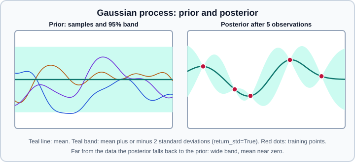

Gaussian Processes
|
This content was generated with the assistance of AI and should be verified against the official documentation before being relied on in production. |
A Gaussian process (GP) is a prior over functions. Together with a likelihood it gives a posterior that yields, for every new input, a full Gaussian predictive distribution instead of a single number. In scikit-learn that distribution comes from GaussianProcessRegressor and GaussianProcessClassifier in sklearn.gaussian_process, and the model is chosen almost entirely through the kernel. This page covers both estimators, the kernel catalogue, how the hyperparameters are fitted, and the places where GPs hurt in practice. The closely related point-prediction model is explained in Kernel Ridge, Kernel Approximation & Nystroem; the Gaussian mixture density model is a different thing and is in Gaussian Mixture Models.
Examples were run on Python 3.13 with scikit-learn 1.9.1, SciPy 1.17.1 and NumPy 2.5.4 on 2026-11-01. No snippet needs PyTorch or TensorFlow.
The model in one page
A GP is written \(f \sim \mathcal{GP}(m, k)\): any finite set of function values is jointly Gaussian, with mean given by \(m\) and covariance given by the kernel \(k(x, x')\). For regression with Gaussian noise of variance \(\sigma_n^2\), the posterior at test inputs \(X_*\) after seeing \((X, y)\) has a closed form:
\[\mu_* = K_*^{\top} (K + \sigma_n^2 I)^{-1} y, \qquad \Sigma_* = K_{*} - K_^{\top} (K + \sigma_n^2 I)^{-1} K_*\]
where \(K\) is the kernel matrix of the training inputs, \(K_*\) the kernel between training and test inputs and \(K_{*}\) the kernel between test inputs. The mean \(\mu_\) is what predict returns; the diagonal of \(\Sigma_*\) gives the standard deviation returned with return_std=True; the full matrix is returned with return_cov=True. scikit-learn follows Algorithm 2.1 of Rasmussen and Williams, which factorises the matrix with a Cholesky decomposition.
The prior mean is zero, or the mean of the training targets when normalize_y=True. Everything else about the function (smoothness, length scale, periodicity, trend) is encoded in the kernel, and the kernel hyperparameters are fitted by maximising the log marginal likelihood (LML) of the training data:
\[\log p(y \mid X, \theta) = -\tfrac{1}{2} y^{\top} (K_\theta + \sigma_n^2 I)^{-1} y - \tfrac{1}{2} \log \lvert K_\theta + \sigma_n^2 I \rvert - \tfrac{n}{2} \log 2\pi\]
The first term rewards fit, the second penalises complexity, so the LML contains its own Occam penalty and needs no validation split. This is the main practical difference from kernel ridge regression, whose hyperparameters are normally chosen by cross-validation (see Hyperparameter Search).

Regression with GaussianProcessRegressor
The example fits a noisy sine curve. The kernel is a product of a constant (the signal variance) with an RBF (the length scale) plus a WhiteKernel that lets the optimiser estimate the observation noise.
import numpy as np
from sklearn.gaussian_process import GaussianProcessRegressor
from sklearn.gaussian_process.kernels import RBF, ConstantKernel, WhiteKernel
rng = np.random.RandomState(0)
X = rng.uniform(0, 10, size=(40, 1))
y = np.sin(X).ravel() + rng.normal(0, 0.2, size=40)
kernel = (
ConstantKernel(1.0, (1e-2, 1e2))
* RBF(length_scale=1.0, length_scale_bounds=(1e-1, 1e2))
+ WhiteKernel(noise_level=0.1, noise_level_bounds=(1e-5, 1.0))
)
gpr = GaussianProcessRegressor(
kernel=kernel, normalize_y=True, n_restarts_optimizer=5, random_state=0
).fit(X, y)
print(gpr.kernel_) # kernel with the optimised hyperparameters
print("log marginal likelihood:", round(gpr.log_marginal_likelihood_value_, 2))
X_new = np.linspace(0, 10, 5).reshape(-1, 1)
mean, std = gpr.predict(X_new, return_std=True)
print("mean:", mean.round(2))
print("std: ", std.round(2))
samples = gpr.sample_y(X_new, n_samples=3, random_state=0) # posterior draws
print(samples.shape) # (5, 3): one column per sampled functionThis printed a kernel close to the truth, 1.14**2 * RBF(length_scale=1.21) + WhiteKernel(noise_level=0.0636) (the square root of the noise level is near the noise standard deviation 0.2), a log marginal likelihood of -18.94, and standard deviations of 0.18 to 0.23 at the five test inputs. The exact digits depend on the version and the BLAS in use.
The constructor options
| Parameter | Default | Meaning |
|---|---|---|
|
|
Prior covariance. Its hyperparameters are the quantities the fit optimises. The fitted copy is |
|
|
Value added to the diagonal of the kernel matrix during fitting. A scalar, or an array with one value per training sample (a per-sample noise variance). It is Tikhonov regularisation, so it also protects the Cholesky factorisation from numerical failure. It is not optimised. |
|
|
Optimiser for the LML. |
|
|
Extra optimiser runs started from hyperparameters drawn at random inside the bounds (the first run starts at the kernel’s initial values). The LML is generally non-convex, so restarts reduce the chance of a poor local optimum. |
|
|
Whether to subtract the mean and divide by the standard deviation of the targets before fitting, and undo that in |
|
|
Keep a private copy of the training data (needed for prediction). |
|
|
Number of target dimensions, only used when sampling from the prior of an unfitted model. |
|
|
Seeds the random restarts and the sampling. |
The defaults above match inspect.signature(GaussianProcessRegressor) on scikit-learn 1.9.1.
Noise: alpha or WhiteKernel
There are two ways to say that the targets are noisy, and they behave differently.
-
alphais a fixed noise variance added to the diagonal. Pass a scalar when you know the noise level, or an array of per-sample variances for heteroscedastic noise with known variances (for example averages of different numbers of measurements). -
WhiteKernel(noise_level=...)is a kernel term the optimiser can learn, as in the example. Use it when the noise level is unknown. Together with the default tinyalphait gives a homoscedastic noise estimate.
With a small alpha and no noise term the posterior mean interpolates the training points. With noisy data that overfits, and the standard deviation at the training inputs collapses towards zero, which is false confidence rather than information.
Predictions: mean, standard deviation, covariance, samples
-
predict(X)returns the posterior mean. -
predict(X, return_std=True)also returns the standard deviation of the latent function at each input. It does not add observation noise unless the noise was modelled by aWhiteKernelinside the kernel, in which case the white term appears in the predictive variance. Check this on your data by comparingstdwith the residual spread. -
predict(X, return_cov=True)returns the full covariance matrix between the test points. Only one ofreturn_stdandreturn_covcan be requested at once. -
sample_y(X, n_samples, random_state)draws functions from the posterior (or from the prior if the model is unfitted), with shape(n_samples_X, n_samples). Use it for scenario analysis and for propagating uncertainty. -
log_marginal_likelihood(theta)evaluates the LML at a given log-transformed hyperparameter vector. It is useful for plotting the LML surface to diagnose multiple optima, or for external hyperparameter inference such as MCMC. Afterfit, the value at the optimum islog_marginal_likelihood_value_.
The standard deviation is only as good as the kernel. An RBF kernel assumes a very smooth function and can be over-confident about a function that is rougher; compare candidate kernels by their LML or by held-out log-likelihood.
Kernels
A kernel must be positive semi-definite. The catalogue lives in sklearn.gaussian_process.kernels.
| Kernel | What it encodes | Notes |
|---|---|---|
|
A constant covariance |
Scales a product (signal variance) or shifts a sum (a constant offset). |
|
Independent noise, nonzero only between a point and itself |
Learns the noise level inside the kernel. |
|
Squared exponential: infinitely smooth, stationary |
Isotropic with a scalar length scale, anisotropic with an array (automatic relevance determination, one length scale per feature). |
|
Controls smoothness with |
|
|
A scale mixture of RBF kernels over many length scales |
Isotropic only. |
|
Periodic functions |
Isotropic only; combine with a decaying kernel for quasi-periodic behaviour. |
|
Linear functions, non-stationary |
Not translation-invariant; usually raised to a power or added to a stationary kernel. |
|
Any metric from |
Gradients are numerical and only isotropic distances are supported, so it is slower. |
The length scale of a stationary kernel is the distance over which the function changes appreciably. Bounds matter: length_scale_bounds, constant_value_bounds, noise_level_bounds and periodicity_bounds (all default to (1e-5, 1e5)) limit the search, and a hyperparameter that ends on a bound triggers a ConvergenceWarning suggesting that the bounds or the kernel should be changed.
Combining kernels
Kernels combine with the operators + (sum, "either component"), * (product, "both at once") and ** (exponentiation by a number). Writing k1 + k2 builds a Sum, k1 * k2 a Product and k ** p an Exponentiation. The hyperparameters of a composed kernel are reachable through the same get_params and set_params mechanism as in Parameters and clone, with the left operand prefixed k1__ and the right operand k2__, for example k1__k2__length_scale. The vector theta holds all non-fixed hyperparameters on a log scale and bounds their log-scale bounds; clone_with_theta(theta) returns a copy with new values.
The next example models a linear-looking trend (a very smooth RBF) plus a yearly-style oscillation (a periodic term) plus noise, and then extrapolates beyond the data.
import numpy as np
from sklearn.gaussian_process import GaussianProcessRegressor
from sklearn.gaussian_process.kernels import ConstantKernel as C, ExpSineSquared, RBF, WhiteKernel
rng = np.random.RandomState(1)
t = np.linspace(0, 6, 80)
y = 0.5 * t + np.sin(2 * np.pi * t) + rng.normal(0, 0.1, t.size)
X = t.reshape(-1, 1)
trend = C(1.0) * RBF(length_scale=5.0)
season = C(1.0) * ExpSineSquared(length_scale=1.0, periodicity=1.0, periodicity_bounds=(0.5, 2.0))
kernel = trend + season + WhiteKernel(noise_level=0.1)
gpr = GaussianProcessRegressor(
kernel=kernel, normalize_y=True, n_restarts_optimizer=3, random_state=0
).fit(X, y)
print(gpr.kernel_)
X_new = np.array([[6.5], [8.0], [12.0]]) # beyond the training range
mean, std = gpr.predict(X_new, return_std=True)
print("mean:", mean.round(2))
print("std: ", std.round(2)) # grows with the distance from the data
# Hyperparameters are exposed under k1__/k2__ prefixes and as a log-transformed vector
print(sorted(kernel.get_params())[:4])
print(gpr.kernel_.theta.round(2))
print(gpr.log_marginal_likelihood(gpr.kernel_.theta) == gpr.log_marginal_likelihood_value_)The fitted periodicity was 0.999 (the true value is 1), and the predictions at 6.5, 8.0 and 12.0 were 3.25, 4.05 and 6.02 with standard deviations of 0.11, 0.12 and 0.27: the mean tracks the underlying signal and the uncertainty grows with the distance from the training range, which is the behaviour you want from a probabilistic model. Do not read the fitted length scale of the periodic and trend parts too literally; with a pure RBF the length scale that maximises the LML can sit far from the geometry of the data.
Kernel design principles that carry over to every problem:
-
Add kernels to model independent components of the signal (trend + seasonality + noise).
-
Multiply kernels to restrict one by another (periodic times a decaying kernel gives a slowly drifting oscillation).
-
Use an array length scale (anisotropic RBF or Matern) when features have different scales or relevance; the fitted length scales then rank feature relevance.
-
Standardise the inputs first (see Scaling & Transforming), because the kernel compares raw distances.
Classification with GaussianProcessClassifier
GaussianProcessClassifier places a GP prior on a latent function that is passed through a logistic link to produce a class probability. The non-Gaussian posterior over the latent function is approximated with the Laplace approximation, and the logistic integral is approximated at prediction time. The latent function has a zero-mean prior, and kernel hyperparameters are again fitted by maximising an approximate LML, with the same optimizer and n_restarts_optimizer options as the regressor.
The classifier does not implement a true multiclass Laplace approximation. For more than two classes it wraps binary problems, selected with multi_class:
-
"one_vs_rest"(default) fits one binary classifier per class and supportspredict_proba. -
"one_vs_one"fits one classifier per pair of classes. Each problem uses only a subset of the data, so it can be cheaper, but it does not support probability estimates.
The classifier also exposes max_iter_predict (the iteration limit of the Newton iterations used in the Laplace approximation at prediction time), warm_start (reuse the previous latent solution when refitting) and n_jobs (parallelises the one-vs-rest or one-vs-one fits). Since scikit-learn 1.7 the classifier also has a latent_mean_and_variance(X) method that returns the mean and variance of the latent function at X. It supports binary problems only; on the three-class iris data it raises ValueError: Returning the mean and variance of the latent function f is only supported for binary classification, received 3 classes.
from sklearn.datasets import load_iris
from sklearn.gaussian_process import GaussianProcessClassifier
from sklearn.gaussian_process.kernels import RBF
X, y = load_iris(return_X_y=True)
for strategy in ("one_vs_rest", "one_vs_one"):
gpc = GaussianProcessClassifier(kernel=1.0 * RBF(1.0), multi_class=strategy, random_state=0).fit(X, y)
print(strategy, "accuracy:", round(gpc.score(X, y), 3))
try:
print(gpc.predict_proba(X[:2]).round(3))
except ValueError as exc:
print("predict_proba failed:", exc)Both strategies scored 0.987 on the training data, one_vs_rest printed class probabilities ([0.835 0.032 0.132] for the first row), and one_vs_one raised a ValueError stating that it does not support predicting probability estimates. The accuracy shown is on training data and is only a smoke test: evaluate with a held-out split, see Cross-Validation.
The probabilities of a GP classifier are not guaranteed to be calibrated; check them with the tools in Probability Calibration. For general multiclass wrapping outside GPs see Voting, Stacking & Multiclass and Multiclass, Multilabel & Multioutput Strategies.
Cost and pitfalls
-
Cost. The implementation is dense and not sparse. Fitting factorises an \(n \times n\) matrix, so time grows cubically and memory quadratically in the number of training samples; the user guide states the cubic scaling for classification. In practice a few thousand samples is where fits become slow, and each of the optimiser iterations and each restart repeats the factorisation. For more data use sub-sampling, an approximation such as Nystroem features with a linear model (see kernel methods), a different model family, or a dedicated GP library outside scikit-learn.
-
High dimension. The user guide notes that efficiency drops when the number of features exceeds a few dozen.
-
Local optima. The LML can have several optima (a short length scale explaining everything as noise, or a long one explaining everything as signal). Use
n_restarts_optimizer, sensible bounds, and set a random seed for reproducibility. -
Extrapolation. Away from the data a stationary GP returns to its prior: the mean tends to the prior mean and the standard deviation to the prior standard deviation. The uncertainty is an honest signal that the model does not know, but the mean is not a forecast.
-
Inputs and targets. Scale the inputs and use
normalize_y=True, or the zero-mean prior and default bounds may not fit the data. -
Non-optimised
alpha. A tinyalphawith a very smooth kernel produces nearly singular matrices and warnings from the Cholesky step. Increasealphaor add aWhiteKernel. -
Repeated inputs. Several targets at the same input are fine only if noise is modelled.
-
Custom kernels. A kernel subclass must implement
__call__,diagandis_stationary, and gradients when it is used with the default optimiser. -
Validity of the uncertainty. The standard deviation is a model-based quantity. If the kernel is wrong, the intervals are too. Validate coverage empirically (for instance, the fraction of held-out points inside the 95 percent band).
Gaussian process versus kernel ridge regression
With the same kernel and the same noise value, the GP posterior mean equals the kernel ridge regression prediction, with the ridge penalty playing the role of the noise variance. The two models differ in how they are used. The GP additionally provides a predictive variance, and it fits kernel hyperparameters by maximising the marginal likelihood, whereas kernel ridge regression gives only point predictions and relies on a grid search for its hyperparameters. The scikit-learn gallery example comparing the two on a noisy periodic signal shows this trade-off: after tuning, the predictions are close; kernel ridge regression needed an external randomised search for its hyperparameters, while the GP optimised its kernel inside fit and also returned a standard deviation; prediction is somewhat more expensive for the GP. The timings in that example come from one run and are indicative only. For tabular problems where only a point estimate is needed, Support Vector Machines and the tree ensembles in Gradient Boosting are usually more scalable. For a broader view of where probabilistic regression fits among the learning problems, see Types of Learning, and for the generalisation arguments behind regularisation, Generalization & Regularization.